Покатушки для Андрюшки в Байкальске
(19-20 января 2008)
После Мамая юного экстремала логично вывезти в Байкальск и показать чем там люди занимаются. Сначала для разогрева покатались на снегокате на учебном склоне. Папа часто бывал в роли подъемника, но и Андрюша тоже возил саночки в гору. Маленький человечек в прикольной шапочке и в горнолыжной маске вызывал восторг у сноубордического контингента, гоняющего по трассам или падающего с трамплинов неподалеку - Света, Марина, Катя, братья Сушко, Артем Немо и другие знакомые лица :)
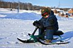
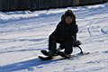
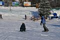

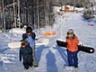
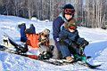
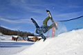
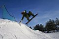
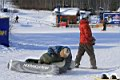
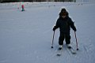
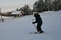
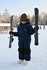
Во второй половине дня у Андрюшки появилось желание
попробовать себя на лыжах. Желание после первого падения
пропало и его долго пришлось восстанавливать уговорами.
В итоге папа до вечера работал и подъемником, и инструктором :)
Андрюшке понравилось, он потом всем рассказывал, что научился
кататься на "Настоящих Горных Лыжах". Правда в основном по
прямой
, но немного поворачивать и тормозить уже умеет.
Для первого
раза хорошо :)
На следуюший день, в воскресень, решили покататься на "бубликах". Сначала вместе катались, потом Андрюшке одному доверил "управление" :) На "бубликах" ему больше понравилось. Ну еще бы, как санки в гору не надо таскать, не упадешь как на лыжах, и тормозить, и поворачивать не надо :) Как и у всяких батонских забав цена соответственно выше - карточка на 4 проезда стоит 100рэ (это минут на 20) супротив комплекта лыжиков за 300рэ (на весь день) ну, да ладно, сам-то сколько прокатываю за сезон, не сосчитать :)
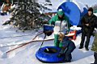
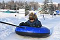
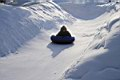
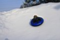
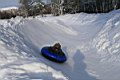
Белокрылов Алексей
Февраль 2008